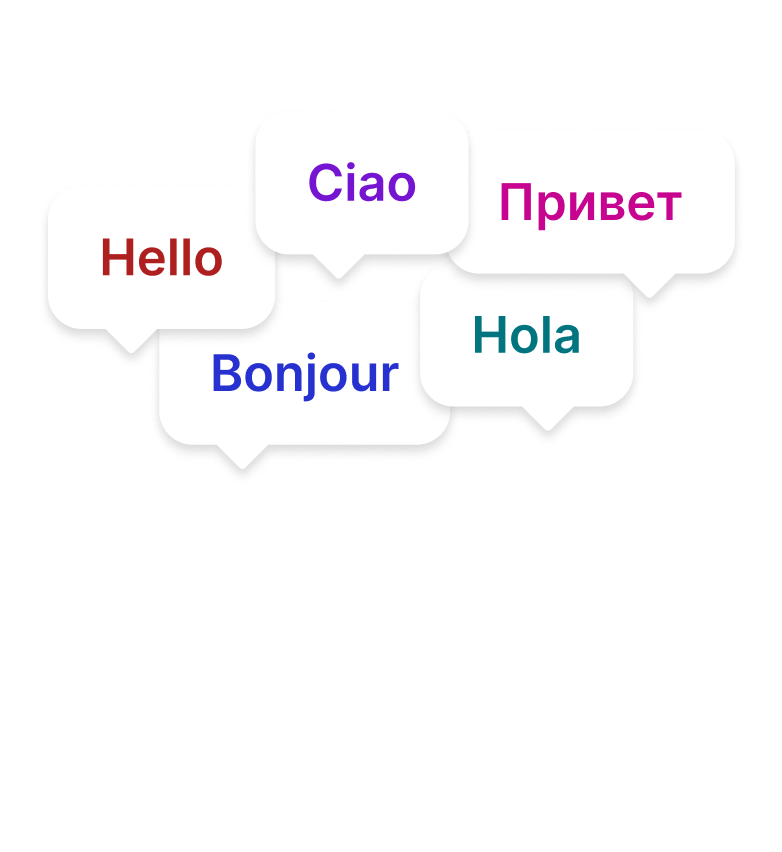
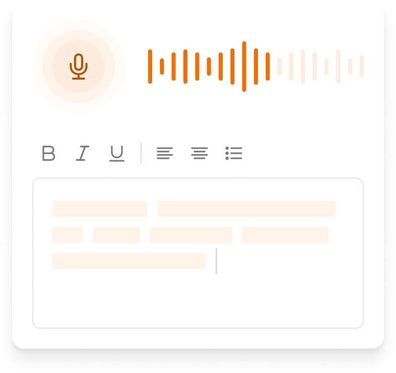

One voice.
Every window.
The complete interface specification for AIDictation on Windows — unified around the brand gradient and warm graphite, replacing the current purple/orange split. Sizes match the real WPF windows.
Design tokens
Single accent — brand orange — across both light (onboarding) and dark (app) themes. The yellow→pink gradient is reserved for brand moments: onboarding panels, the logo, progress fills.
Onboarding
Six steps, split layout with the gradient panel; the final step goes full-gradient. Click Next / Back to walk the real flow — the mode cards, language chips and sign-in state are live.
Microphone
Access
AIDictation needs your microphone to record and transcribe your voice. Windows will ask once.
Your languages
Pick every language you dictate in — or let auto-detect figure it out.
How should we
transcribe?
You can change this anytime in Settings.
Best accuracy, requires internet
Private — audio never leaves this PC
Cloud when online, on-device when offline
Recording
Hotkey
Press it anywhere on your PC to start and stop dictating.
Tip: function keys (F1–F12) work best — other apps rarely use them.
Make it yours
Pick the accent for the recording pill. You can change it later in Settings → Overlay.
Try your first
recording
Click into the box, then dictate hands-free.
Sign in to
your account
Free account includes cloud transcription and keeps your plan in sync across devices. Opens in your browser.
You can also do this later from Settings → Account.
AIDictation needs your microphone to record audio for transcription. You can change this later in Privacy settings.

edge of your screen

every device
You're ready
Press F8 in any app to start dictating. AIDictation lives in your system tray.
Settings
Standard Windows 11 Settings anatomy: Mica window, transparent nav with the accent selection bar, setting cards (icon · label · control), Fluent toggles, 4px controls on 8px surfaces, Segoe UI. Accent stays brand orange. Click through the nav — both account states included.
General
Shortcut to start and stop dictation
Hold the hotkey to record, release to insert
Choose how your voice is transcribed
Display the overlay even when not recording
Accent color for the recording overlay
Where the recording indicator appears
Automatically start when you sign in
Current version 0.0.1
Audio
Microphone used for dictation
Pause music and videos while you dictate
AI fixes punctuation, stutters and obvious errors
Language
Dictionary
Shortcuts
History
Today 4:32 PM · 12.4s · 38 words
Today 2:18 PM · 5.1s · 16 words
Yesterday 9:12 AM · 3.3s · 9 words
14,302 words dictated
Account
Get 2,000 extra words when a friend joins
History
Date-grouped, hover reveals copy / delete without layout shift. Word count and duration in the meta column; failed items marked inline.
Recording overlay
Ported 1:1 from the macOS RecordingOverlayView: a hairline strip when idle that morphs — cubic-bezier(.2,.8,.2,1) · 260ms — into the accent capsule. No text, ever. Content fades in 140ms after the morph; collapse takes 150ms.
AIDictation.Windows
windows-app-prototype.html